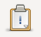
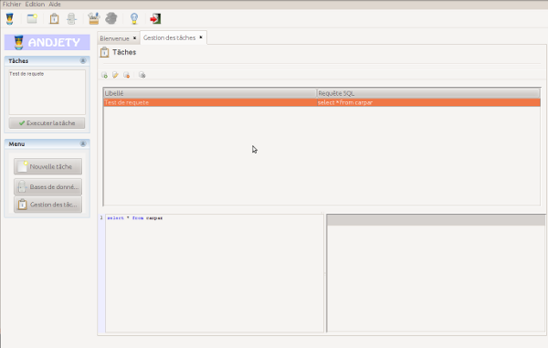
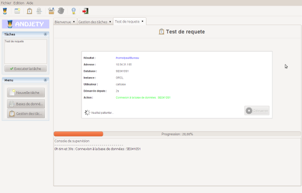
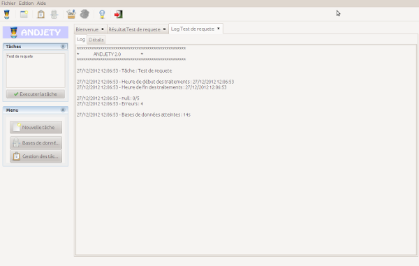
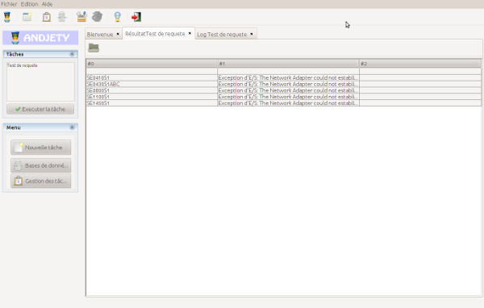

Excecute task
To perform a task, click  that found in the toolbar. The task management panel will then appear:

Select the task you want to perform. The control panel execution of the task will then open. Click "Start" to start the actual execution of the task:

Once the task is completed, two new panels will appear:
- Panel of LOGS: LOGS of actual execution of the task (failure to connect to databases, etc.)
- Results Panel: Panel to see the results of the execution of the SQL query as a table (can be export to XLS file)
Panel of LOGS

Results Panel

Back
© Paul Coiffier (2012) - SaphirSoftware.com